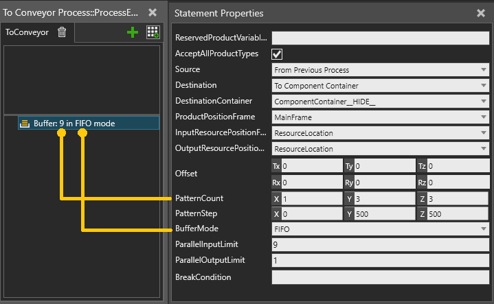

A Buffer statement allows you to create a temporary storage for products in a grid pattern. Multiple products can be coming in and leaving the buffer in parallel. Transport of products is handled similarly to the Transport statements.
The statement continues execution until the break condition is met and the buffer has emptied.

| Name | Description |
| ReservedProductVariableName | Variable containing products already reserved using Reserve Product statement. The buffer will be first filled using these products and then will continue to receive further products as defined by the Source property. Note: The product filtering defined by properties AcceptAllProductTypes, AcceptedFlowGroups and AcceptedProductTypes is not applied to the pre-reserved products. |
AcceptAllProductTypes |
If selected, any product is accepted. |
AcceptedFlowGroups |
Allows only the selected flow groups. |
| AcceptedProductTypes | Allows only the selected product types. |
| Source | Defines which source is used to transport product in. From Previous Process From Component Container |
| Destination | Defines the destination to where product is transported out. To Next Process To Component Container To Transport Node |
| DestinationContainer | Component container whose output connection is used to place the outgoing products in container mode. |
| ProductPositionFrame | Frame location where the products are placed. |
| InputResourcePositionFrame | Defines resource position offset from product position and XY plane on which resource position is projected to while filling the buffer. |
| OutputResourcePositionFrame | Defines resource position offset from product position and XY plane on which resource position is projected to while emptying the buffer. |
| Offset | Offset of the first product from product position frame |
PatternCount |
Number of product per X,Y,Z axis |
| PatternStep | Step between products in pattern per X,Y,Z axis |
| BufferMode | Defines the product access order of the buffer. First-In-First-Out (FIFO) Last-In-First-Out (LIFO) |
ParallelInputLimit |
Defines how many products can fill the buffer in parallel |
| ParallelOutputLimit | Defines how many products can leave the buffer in parallel |
| BreakCondition | When evaluates to True, the buffer stops accepting products and empties. |